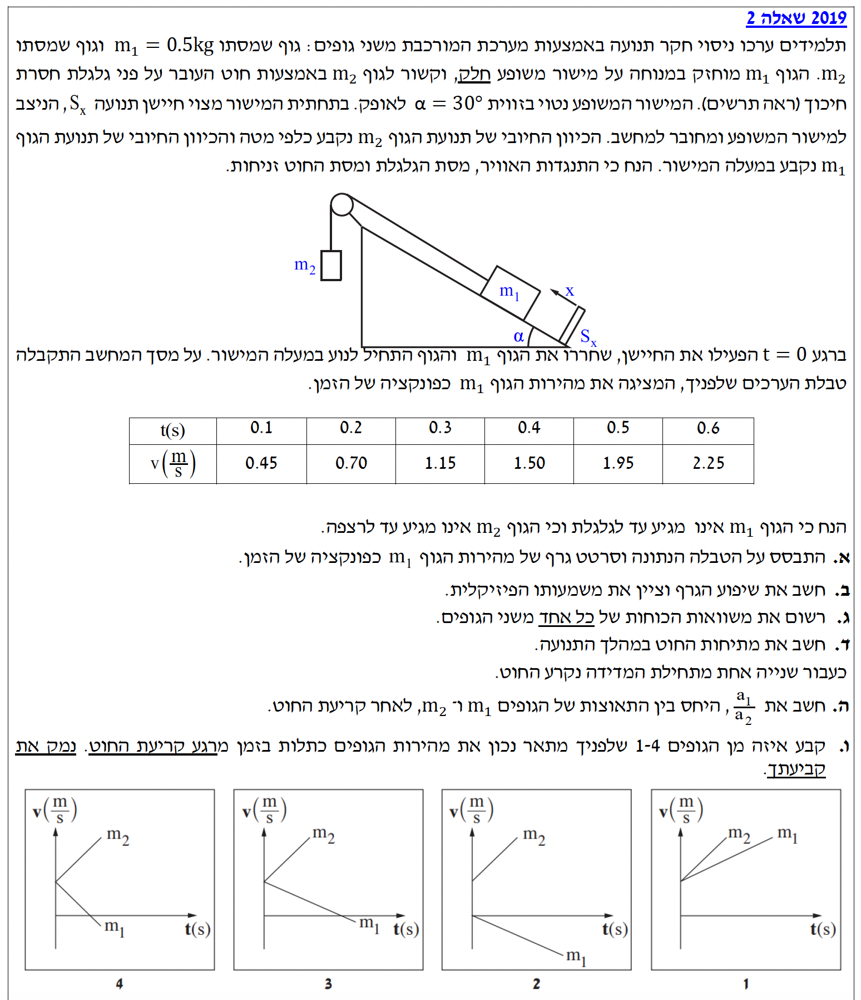
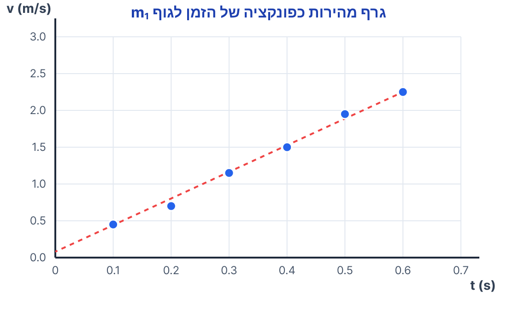
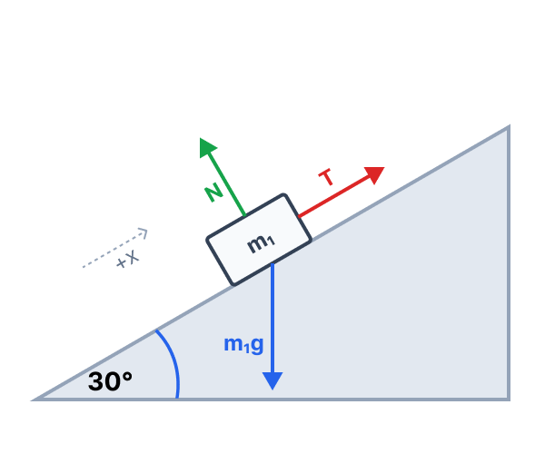
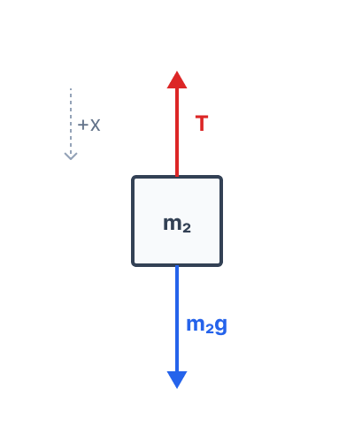

ברוכים הבאים לפתרון המלא של שאלת הקינמטיקה והדינמיקה! בבעיה זו נחקור תנועה של מערכת גופים המקושרים בחוט על גבי מישור משופע, ננתח את תנועתם מתוך נתונים ניסויים, ונבין לעומק כיצד הכוחות פועלים בשלבים השונים של התנועה.

ברשותנו טבלת ערכים המתארת את מהירותו של גוף \(m_1\) כפונקציה של הזמן בזמן עלייתו במעלה המישור המשופע. כל הנתונים מסופקים מראש ביחידות התקניות של מערכת MKS (זמן בשניות, מהירות במטרים לשנייה), ולכן תהליך המרת היחידות אינו נדרש כאן ונוכל לעבוד ישירות עם המספרים הנתונים.
לסרטט גרף פיזור של המהירות \(v\) (על ציר ה-y) כפונקציה של הזמן \(t\) (על ציר ה-x), ולהעביר דרך הנקודות קו מגמה מתאים המתאר את התנועה.
אין נוסחה חישובית ספציפית מדף הנוסחאות לשלב זה. עם זאת, היות והגוף נע בהשפעת כוחות קבועים, נצפה שהתאוצה תהיה קבועה, ולכן הגרף יתאים למשוואת קינמטיקה של קו ישר \(v = v_0 + at\).
נפרוס את הנקודות על גבי מערכת צירים תקנית, נוסיף כותרות לצירים ונמתח קו מגמה ליניארי ("Best fit line") העובר קרוב ככל האפשר לכל הנקודות:

הגרף הליניארי שקיבלנו בסעיף הקודם. נבחר שתי נקודות מרוחקות ככל האפשר הנמצאות על קו המגמה עצמו כדי לדייק בחישוב. נשתמש בנקודות הקצה מתוך הטבלה (שנמצאות ממש על קו המגמה שלנו): הנקודה הראשונה היא \((t_1 = 0.1 \text{ s}, v_1 = 0.45 \text{ m/s})\), והנקודה השנייה היא \((t_2 = 0.6 \text{ s}, v_2 = 2.25 \text{ m/s})\).
את ערכו המספרי של שיפוע הגרף ואת המשמעות הפיזיקלית של תוצאה זו.
על פי הגדרת התאוצה הממוצעת \(\overline{a} = \frac{\Delta v}{\Delta t}\) (נגזרת מתוך \(a = \frac{dv}{dt}\) בדף הנוסחאות).
מסת הגוף הראשון היא \(m_1 = 0.5 \text{ kg}\). זווית השיפוע היא \(\alpha = 30^\circ\). תאוצת הכובד היא תמיד חיובית ושווה ל-\(g = 10 \text{ m/s}^2\). כפי שהוגדר בשאלה, הכיוון החיובי של \(m_1\) הוא במעלה המישור, והכיוון החיובי של \(m_2\) הוא כלפי מטה. המישור מוגדר כחלק, ולכן אין כוח חיכוך.
לרשום במדויק את משוואות התנועה בהתבסס על החוק השני של ניוטון עבור כל אחד משני הגופים בנפרד, כולל תרשים כוחות (FBD) ברור לכל גוף.
החוק השני של ניוטון \(\Sigma\vec{F} = m\vec{a}\), ונוסחת כוח הכבידה \(F = mg\).
נתחיל משרטוט תרשימי הכוחות (FBD) עבור כל גוף בנפרד במערכות הצירים שהוגדרו:
תרשים כוחות לגוף m₁

פירוק הכובד: רכיב \(m_1g\sin\alpha\) פועל במורד המישור.
תרשים כוחות לגוף m₂

הגוף נע רק בציר האנכי.
כעת, נרשום את משוואות החוק השני של ניוטון בציר התנועה של כל גוף (אותו נסמן כציר \(x\)):
אנו יודעים ממצאים קודמים כי התאוצה היא \(a = 3.6 \text{ m/s}^2\), מסת הגוף היא \(m_1 = 0.5 \text{ kg}\), תאוצת הכובד \(g = 10 \text{ m/s}^2\), והזווית \(\alpha = 30^\circ\).
את גודלו של כוח המתיחות בחוט \(T\) בזמן התנועה המשותפת.
נשתמש ישירות במשוואה שפיתחנו עבור הגוף הראשון בסעיף הקודם הנובעת מ- \(\Sigma\vec{F} = m\vec{a}\).
ניקח את משוואת התנועה של גוף \(m_1\) ונחלץ ממנה אלגברית את הנעלם \(T\):
כעת נציב את הערכים המספריים שאנו יודעים למשוואה המבודדת:
לאחר שנייה אחת, החוט נקרע. המשמעות הפיזיקלית המיידית היא שכוח המתיחות מתאפס לחלוטין (\(T = 0\)). כיווני הצירים החיוביים נשארים כפי שהוגדרו מראש.
את היחס בין תאוצת הגוף הראשון לתאוצת הגוף השני \(\frac{a_1}{a_2}\) מרגע קריעת החוט.
נחזור שוב אל החוק השני של ניוטון \(\Sigma\vec{F} = m\vec{a}\).
נרשום את משוואות התנועה החדשות בהיעדר כוח המתיחות (\(T=0\)):
עבור גוף \(m_1\):
\[ \Sigma F_{x1} = -m_1 g \sin(30^\circ) = m_1 a_1 \] \[ a_1 = -g \sin(30^\circ) = -10 \cdot 0.5 = -5 \text{ m/s}^2 \]עבור גוף \(m_2\):
\[ \Sigma F_{x2} = m_2 g = m_2 a_2 \] \[ a_2 = g = 10 \text{ m/s}^2 \]נחשב את היחס ביניהן על ידי חלוקה פשוטה:
אנו יודעים כעת את התאוצות של שני הגופים לאחר קריעת החוט: \(a_1 = -5 \text{ m/s}^2\) ו- \(a_2 = 10 \text{ m/s}^2\). בנוסף, ברגע קריעת החוט שני הגופים היו בתנועה, ולכן מהירותם ההתחלתית ברגע זה היא חיובית (\(v_0 > 0\)).
לקבוע ולנמק איזה מבין ארבעת הגרפים המוצעים מתאר נכונה את מהירות הגופים כפונקציה של הזמן החל מרגע קריעת החוט.
הקשר הקינמטי הליניארי \(v = v_0 + at\), בו התאוצה \(a\) מהווה את שיפוע הגרף.
ננתח את הנתונים שלנו גאומטרית על מנת למצוא את הגרף המתאים:
נבחן את האפשרויות: בגרפים 1 ו-2, מהירות \(m_1\) לא חותכת את הציר, מה שלא הגיוני (הוא חייב לעצור ולשנות כיוון). נותרנו עם גרפים 3 ו-4. בגרף 4, השיפוע של \(m_1\) תלול יותר מהשיפוע של \(m_2\), מה שסותר את הממצא שלנו (\(10 > 5\)). בגרף 3, השיפוע של \(m_2\) אכן תלול משמעותית מהשיפוע השלילי של \(m_1\).